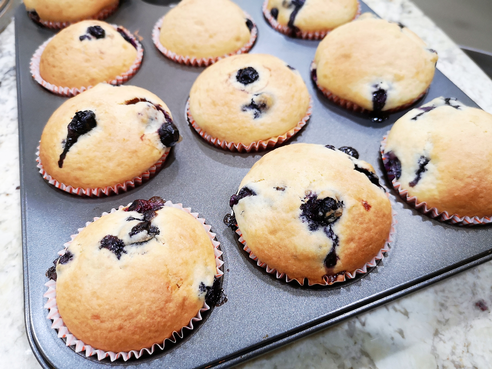

Muffin

Description
Blini are a traditional dish of Russian, Ukrainian and Belorussian cuisine, and one of the most commonly eaten foods in Russia. They are a type of yeast dough pancake that is typically made from wheat or buckwheat flour. In the West, blini typically
refers to a small, savoury pancake that is made with a leavened batter, usually about 5 – 10 cm long. In Russia and Ukraine, however, blinis are usually pan-sized, thinner pancakes made from unleavened batter, similar to crepes. Blini are sometimes
spelled as bliny, and can be referred to as ‘blin’, as in the singular form of blini. Due to their round shape, blini were considered to be a symbol of the sun in pre-Christian times. The East Slavic people would cook and eat blini at the end
of winter, to mark the return of the sun (otherwise known as butter week or pancake week). This tradition is still practiced today.
Ingredients
- 2 cups all-purpose flour
- 3 teaspoons baking powder
- ½ teaspoon salt
- ¾ cup white sugar
- 1 egg
- 1 cup milk
- ¼ cup vegetable oil
Steps
- Preheat oven to 400 degrees F (205 degrees C).
- Stir together the flour, baking powder, salt and sugar in a large bowl. Make a well in the center. In a small bowl or 2 cup measuring cup, beat egg with a fork. Stir in milk and oil. Pour all at once into the well in the flour mixture. Mix quickly
and lightly with a fork until moistened, but do not beat. The batter will be lumpy. Pour the batter into paper lined muffin pan cups.
- Variations: Blueberry Muffins: Add 1 cup fresh blueberries. Raisin Muffins: Add 1 cup finely chopped raisins. Date Muffins: Add 1 cup finely chopped dates. Cheese Muffins: Fold in 1 cup grated sharp yellow cheese. Bacon Muffins: Fold 1/4 cup crisp
cooked bacon, broken into bits.
- Bake for 25 minutes, or until golden.